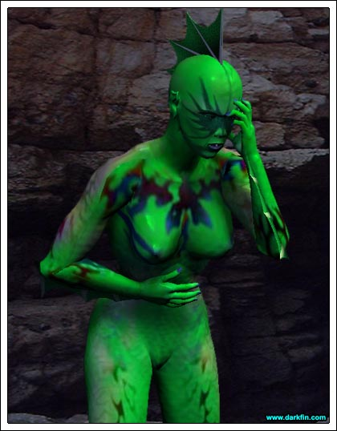
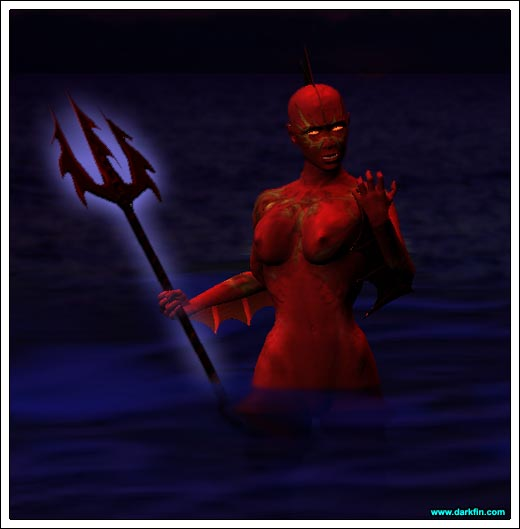
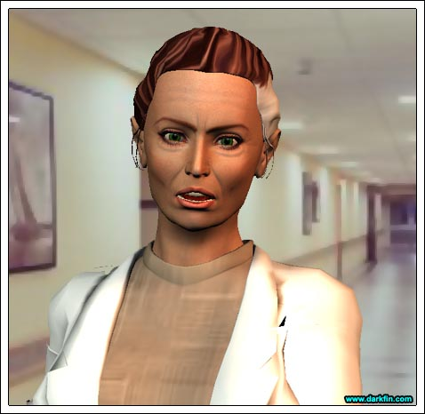
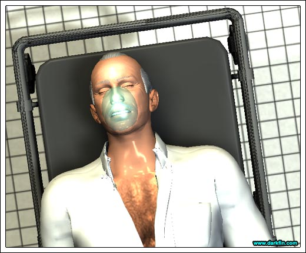
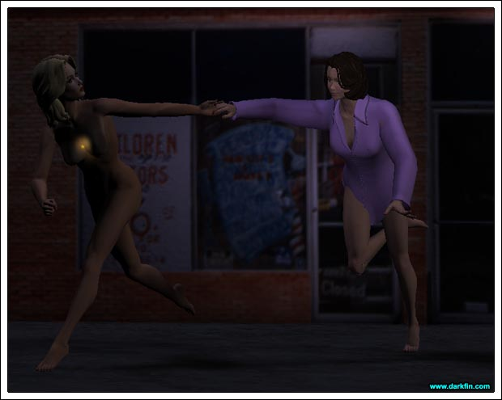
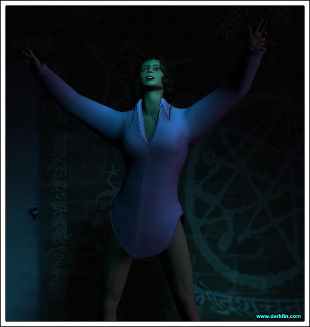
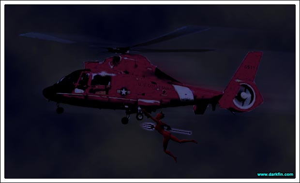
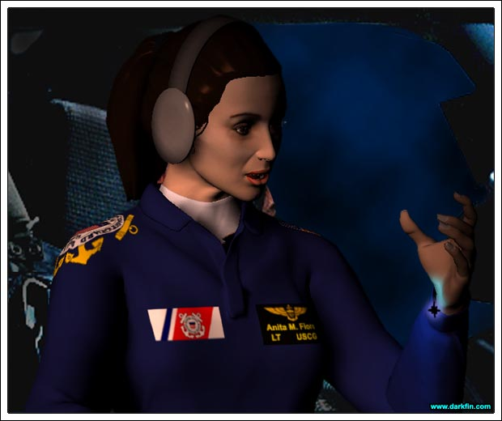
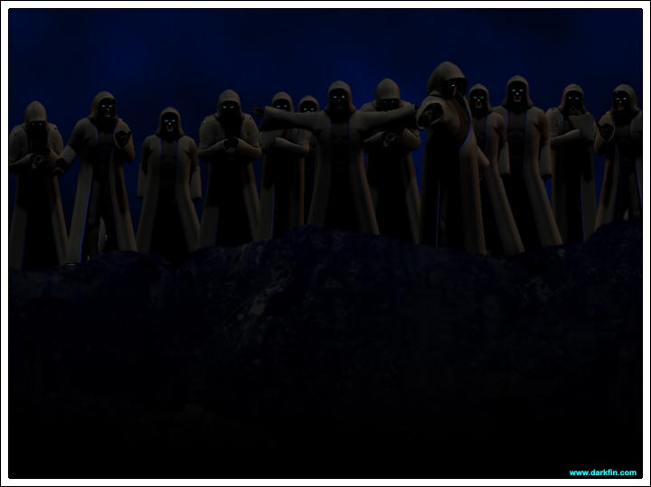

Darkfin: (Clutching her head) This... this is bad
Darkfin (Squinting at her watch) It's been about five hours since I took a dive in the family duck pond - the morph was complete but everything else... is completely off the scale - temperature fluctuations, hypersensitivity, severe aggressive behavior... I nearly fed on Ben's youngest
Darkfin I have the overwhelming urge to jump into the seawater before me again but I'm afraid it might trigger a more adverse reaction - I need to revert to a fully human state once more
Darkfin (Wrapping herself up in it) It's so... so cold
Darkfin (Exhaling slowly) You are going to have to get through tonight without me - I need to rest... recuperate... DAMMIT
Darkfin (Rubbing her eyes) Yet, I also have an overwhelming fear that something is horribly wrong - I must go ashore!
Darkfin Two hours back by boat is too long, I need to swim, I need to go... NOW
Darkfin (Staring down at her body) So much for camouflage

Stephanie (On her cell phone) I will not have this argument with you again, Hector... no, I will not meet you there, leave it alone!
Nurse All set, doctor?
Stephanie Pretty much - it looks like it's going to be a quiet night - please be sure to check Mr. Wilkins' Foley in twenty minuets
Nurse No problem - any fun plans?
Stephanie (Sighing) I finally thought I'd have the opportunity to see my daughter but, surprisingly, she's busy
Nurse (Checking her computer screen) Ooh, got a new one rolling in - a 62-year-old white male, possible MI
Stephanie (Walking away) Not my problem, I'm officially off duty
Nurse Uh, it says here the patient's name is Karl von Meer
Stephanie (Freezing) KARL?

Nurse The ETA is two minutes
Stephanie (Running) CALL THE TRAUMA TEAM AND TELL THEM I'M ON MY WAY
Stephanie WHAT HAPPENED?
Pauline (Sobbing) We were just having dinner... and he... he slumped over - HELP HIM, PLEASE
Stephanie Did he eat something bad, was he choking at all?
KJ No, no... not that we could tell!
Pauline (Hitting her son on his arm) FIND YOUR SISTER, NOW
KJ (Exasperated) I'M TRYING, I'VE TRIED EVERY WAY TO CONTACT HER, SHE'S NOT ANSWERING
Pauline THEN GO OUT THERE AND LOOK FOR HER, KJ
KJ I SHOULD STAY
Stephanie I want you two to wait out here, I'll let you know as soon as I know something, I promise
Pauline I'M NOT LEAVING HIM
KJ MOM - please, let her work, we'll just be outside!
Stephanie (To the EMT) What are his vitals?
EMT BP 90/60 and dropping fast, pulse is erratic at 150, shallow breathing, in and out of consciousness...

Stephanie (Checking Karl out herself) DAMMIT
EMT Two lines were started en route but we can't get a good flow going
Stephanie His color is bad... KARL, KARL, CAN YOU HEAR ME?
Karl Sr. Steph?
Stephanie Yes, Karl, right here - can you tell me anything?
Karl Sr. (Struggling) You... you need...
Stephanie (Leaning closer to him) What?
Karl Sr. To protect her...
Stephanie (Clearing his airway) DEAR GOD, WHAT IS THAT SMELL?
EMT HE'S CRASHING
Stephanie GIVE ME A BAG
EMT PULSELESS V-TAC
Stephanie CHARGE THE PADDLES... HOLD ON, KARL, PLEASE
Detective 1 OPEN UP, MS. MCBRIDE, WE HAVE A WARRANT FOR YOUR ARREST
Detective 2 PLEASE DON'T MAKE THIS DIFFICULT
Officer No one's home - I checked the main house and there's no sign of the landlady, either!
Detective 1 (Smacking the door) SHIT
Detective 2 PUT OUT AN IMMEDIATE APB FOR BOTH

Morrigan (Out of breath) STOP... AMY, STOP, PLEASE
Amethyst WE NEED TO KEEP MOVING
Morrigan (Wincing at her cut, bare feet) You didn't even give me a chance to put on my shoes!
Amethyst (Looking up at the sky) There is no time
Morrigan I really appreciate what you're trying to do for me... but I can't outrun the police
Amethyst It's not the police I'm worried about... C'MON
Morrigan Why are you naked? - what is that light coming from your crystal?
Amethyst (Sharp tone) WHY IS THE BOTTOM OF YOUR LEFT FOOT GLOWING?
Morrigan OH, GREAT
Amethyst Let's go, we're almost there
Morrigan Where?
Amethyst TRUST ME, MORRIGAN, YOU HAVE TO...
Brad (To himself) I'll show you, father, Griffin is NOT the only Martel that can handle a business
Penny (Sneaking up behind him and covering his eyes) Is that a new track from "Ministers of Toxin?"
Brad (Jumping) FUCK
Brad PENNY... whoa, I am so sorry - I didn't know it was you
Penny (Trying not to look hurt) Obviously
Brad (Trying to hug her) C'mere
Penny (Now pushing him off) GO TO HELL
Brad Seriously, it's not a wise move to be lurking around in an abandoned building, especially in this part of town
Penny (Smirking) You seem to be perfectly comfortable here
Brad I was... until you made me soak my shorts
Penny Soaked with exactly what?
Brad As much as I get off on your little nympho-tease routine, I'm not in the mood tonight
Penny That's unlike you, Bradley
Brad (Going back to his paperwork) Tell me about it - why aren't you with your mom at that museum meeting?
Penny She's a big girl, she can handle it without me... make someone else carry her coffee for once
Brad And good old Uncle George?
Penny (Miffed) In the state hole called "Sacto" or the sub hole called "Tim" - one or the other... or both
Brad Should I ask my dad to talk to him?
Penny It's no use... let's change the subject please
Brad OK
Penny (Biting her lip) You know, we haven't even decided on a name for this place yet
Brad (Checking a calculator) I think "Weird Crap For Sale" says it all
Penny Is there anything I can do to help?
Brad (Not looking at her) Go home
Penny (Pissed) ARE YOU KIDDING ME?
Brad LOOK, I need to concentrate and I can't do that if I'm staring at your tits all night!
Penny (Smiling and flashing her bra) You'd only STARE at my tits all night?
Brad (Rubbing his flushed cheeks) What is it, a full moon out tonight or something? - why don't you go play with your puppy dog and let a real man get back to work?
Penny HEY, YOU WANTED ME IN THIS BUSINESS WITH YOU
Brad I do and I want to get this business off the frigging ground but that's taking more time and more money than I had originally planned
Penny I can help you, I'm smart
Brad I KNOW you are but I need to get this paperwork finished by morning
Penny (Folding her arms and walking off in a huff) Fine, maybe I WILL go play with my puppy dog... Jeremy is awesome at licking my face!
Brad (Before she reaches the door) WAIT
Penny Yeeeees?
Brad (Sighing) Amy was here earlier today setting up a bunch of her candles and crystals in the back room
Penny (Jealous tone) Amy?
Brad Amethyst Hill
Penny Yeah, I know who she is
Brad Maybe you could double-check the SKU's?
Penny SKU's?
Brad "Stock Keeping Unit"
Penny Right...
Brad Thanks
Brad (Scrambling over) WHAT'S WRONG?
Brad WHAT THE FUCK DID SHE DO IN HERE?
Penny (Delighted) You lying bastard...
Penny You knew I was coming all along
Brad (Still baffled) Um...
Penny (Backing him against a wall) You always know when I'm coming... I can't believe you staged this whole thing just to get between my legs
Brad I... I... yeah, OK, whatever
Brad AAAAHHH
Amethyst Sorry to interrupt
Morrigan (Scanning around) What are we doing here?
Brad I WAS ABOUT TO ASK THE SAME THING
Penny (Eyeing the naked Amy) YOU SICK FUCK, NO WAY AM I DOING A THREE-WAY
Brad (His voice an octave higher) I HAVE NO IDEA WHAT'S GOING ON, HONESTLY, I DON'T
Penny (Turning to Morrigan) What is she doing?
Morrigan I don't know
Morrigan (Slapping Brad hard across the face) HOW OLD IS THIS GIRL, DUDE?
Penny DON'T SLAP HIM
Brad (Near tears) I DIDN'T TOUCH HER
Morrigan YOUR HAND UP HER SHIRT SAYS OTHERWISE
Penny MIND YOUR BUSINESS, LADY, WHY ARE YOU EVEN HERE?
Brad (Ducking and covering) EARTHQUAKE
Amethyst MORRIGAN, GET IN THE CENTER OF THE ROOM, NOW
Morrigan WHY?
Penny DOES ANYONE ELSE HEAR THAT?
Amethyst (Pleading with McBride) JUST DO IT, DO IT NOW
Brad WE GOTTA GET OUTTA HERE
Amethyst DON'T OPEN THE DOOR

Craig (Looking at his watch) Is this wise?
Anita Our sources say the police will be arresting McBride anytime now
Craig Maybe we should be hovering over her house?
Anita No, we need to be hovering over Aleta Oscura's casa - and we are
Craig What if she's already on shore?
Anita We have a tail on our KCON chica, she's all alone except for her wacky landlady and a couple of cats
Craig (Softly) Amethyst Hill?
Anita Yeah... enjoying a pleasant flashback?
Craig That was a few years ago
Anita (Chuckling) I remember
Craig She gave great head but was too much of a space case for me
Anita Amy's a lot less maintenance than your current "warrior moon queen"
Craig That's debatable

Anita What was that?
Craig You probably hit an air pocket... or a bird
Anita It didn't feel like that at all - something else is wrong
Anita We've taken on weight!
Craig How is that possible?
Anita HOLD ON, I'M GOING TO TRY A FEW MANEUVERS
Anita Everything seems to be fine - I don't understand it
Craig CHECK OUT YOUR BRACELET
Anita (Poking at it) JESUS

Craig Is it some bizarre Saint Elmo's Fire type deal?
Anita I have no clue, it's only done this a few other times before - my folks freaked out when it did
Craig I think we better head back to base
Anita NO... she's here - can't you sense it? - I bet that's what the weight is... KEEP IT STEADY FOR ME, PHELPS
Craig (Barely audible) Fiore
Anita ONE SEC... I THINK I SEE SOMETHING... IT'S HER, SHE'S HITCHING A RIDE
Craig (Louder) Fiore
Anita CAN YOU BANK LEFT A BIT?
Craig (Shouting) FIORE
Anita (Returning) WHAT, CRAIG, WHAT IS YOUR PROBLEM?
Craig (Pointing) THERE... ON THE CLIFF
Craig TELL ME YOU SEE THAT
Anita I... I do
Craig MY GOD
Anita Save us all!
